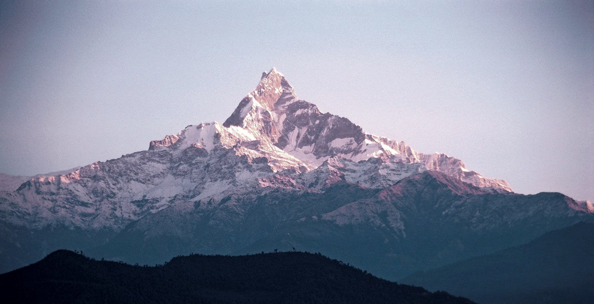
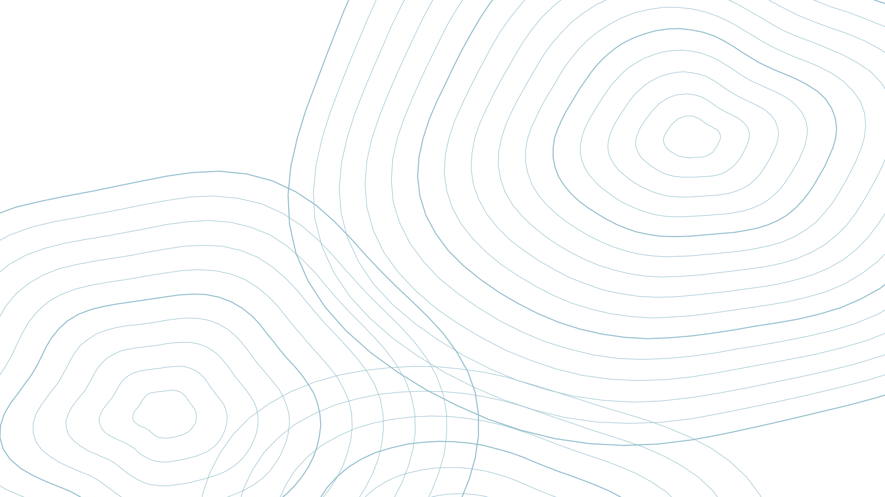
Group 7 · Mountains and high-altitude regions
Wild animals of the Andes, the Himalayas, the Alps and the Rocky Mountains
▲ BASE CAMP · 0 M
LIFE AT THE TOP · 01
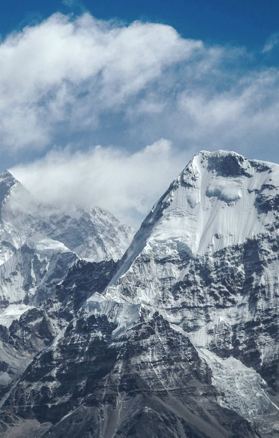
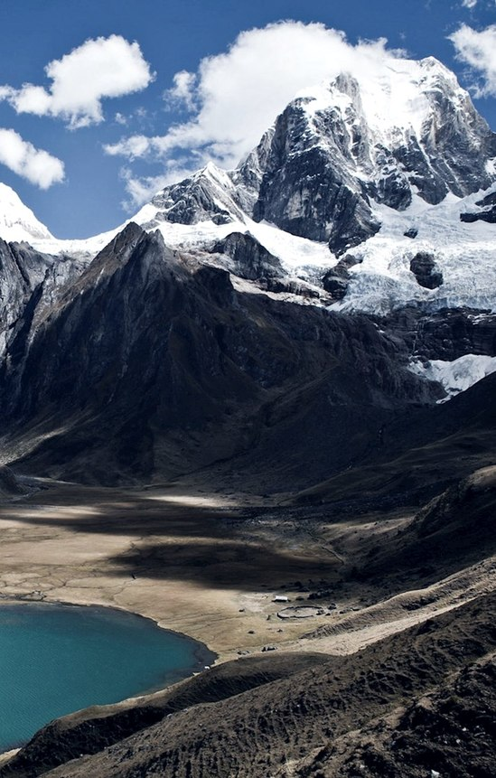
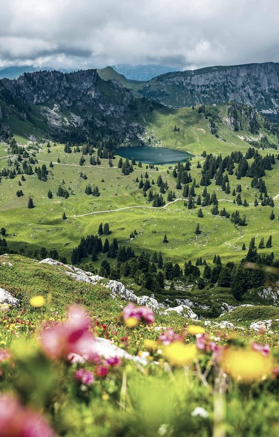
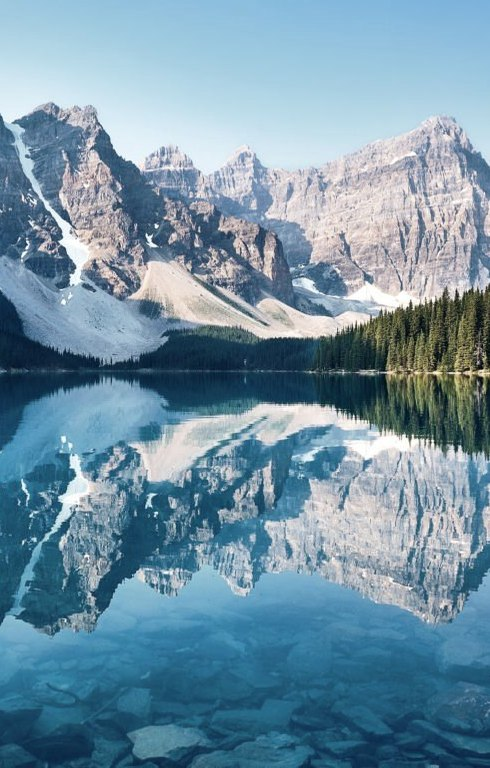
Where
the highest!
Asia
Everest 8,849 m
2,400 km long
the longest!
South America
Aconcagua 6,961 m
7,000 km long
Europe
Mont Blanc 4,806 m
1,200 km long
North America
Mt Elbert 4,401 m
4,800 km long
▲ 1,000 M
LIFE AT THE TOP · 02
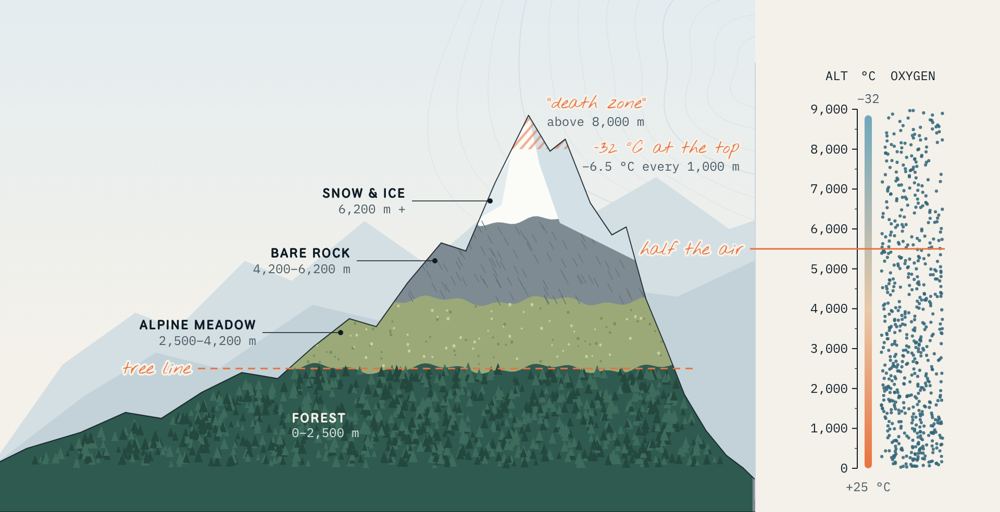
The habitat
▲ 2,000 M
LIFE AT THE TOP · 03
▲ 3,000 M
LIFE AT THE TOP · 04
Wildlife
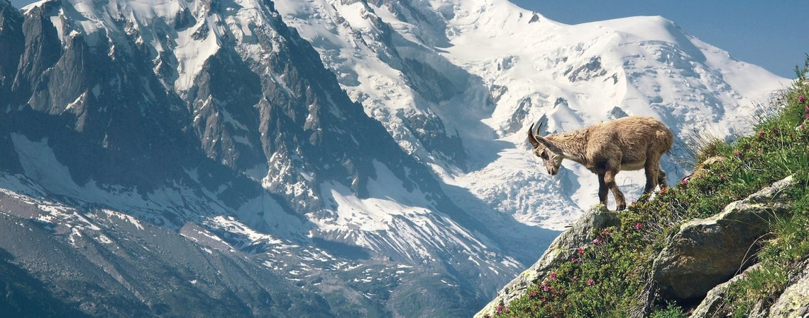
Alpine ibex · Alps
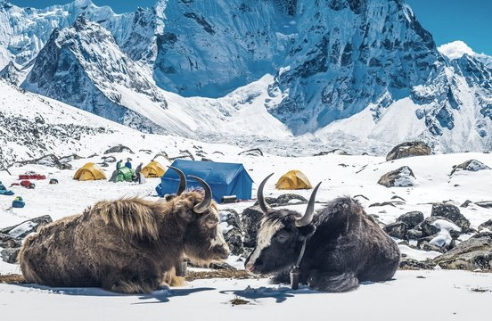
yaks · Himalayas
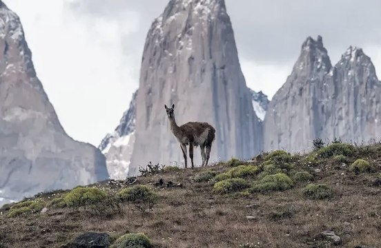
guanaco · Andes
the roof of the world
snow leopard, yak, red panda, blue sheep
Yaks have long, shaggy fur and huge lungs for the thin air.
the longest range
Andean condor, guanaco, vicuña, puma
Vicuñas grow some of the finest wool on Earth.
Europe’s backbone
Alpine ibex, chamois, marmot, golden eagle
Marmots sleep underground for up to six months in winter.
from Canada to the USA
mountain goat, bighorn sheep, grizzly bear, pika
Pikas collect grass all summer and store it like hay.
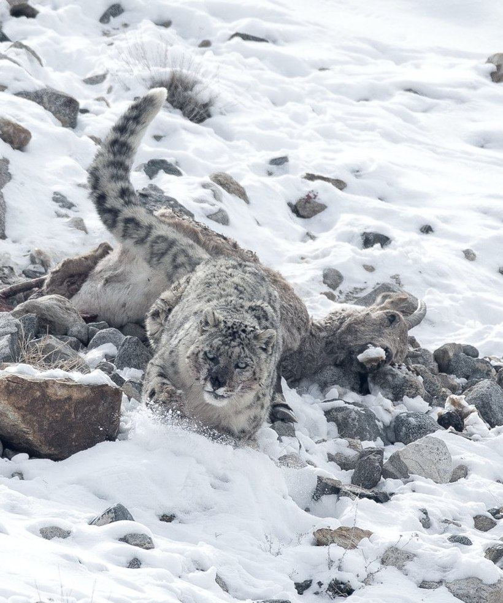
a snow leopard guards its prey
▲ 4,000 M
LIFE AT THE TOP · 05
Food chain
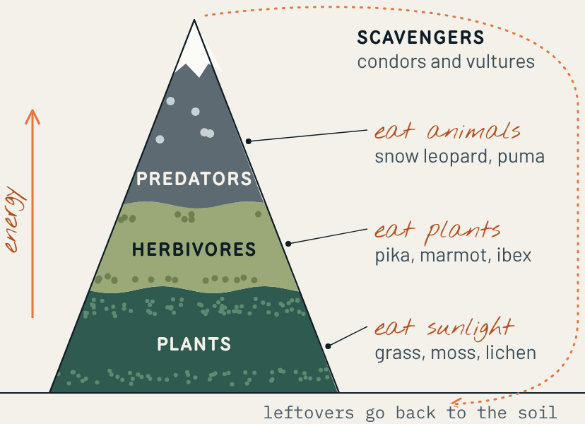
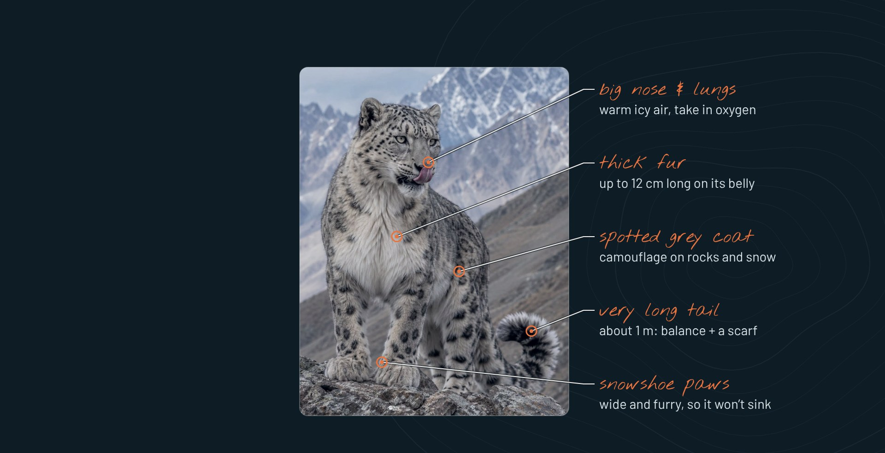
Animal 01
Panthera uncia, the “ghost of the mountains”
3,000–5,500 m
where it lives
4,000–6,500
left in the wild
Vulnerable
IUCN Red List
▲ 5,000 M
LIFE AT THE TOP · 06
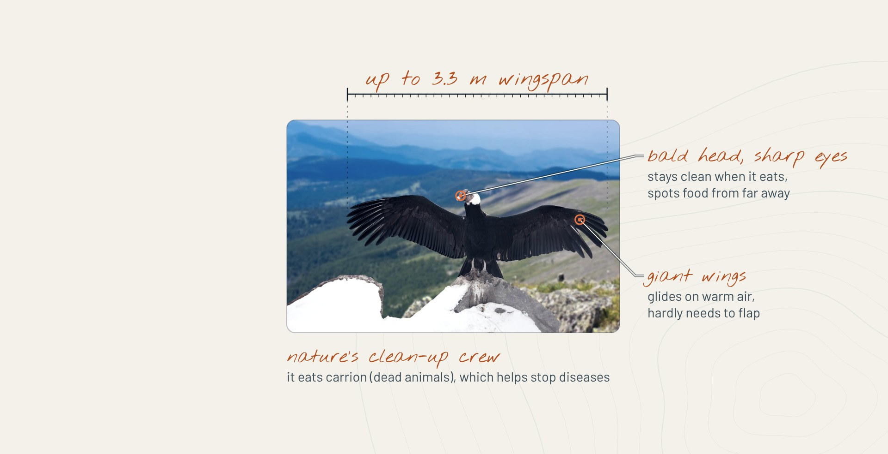
Animal 02
Vultur gryphus, one of the largest flying birds
3.3 m
wingspan
15 kg
top weight
Vulnerable
IUCN Red List
▲ 6,000 M
LIFE AT THE TOP · 07
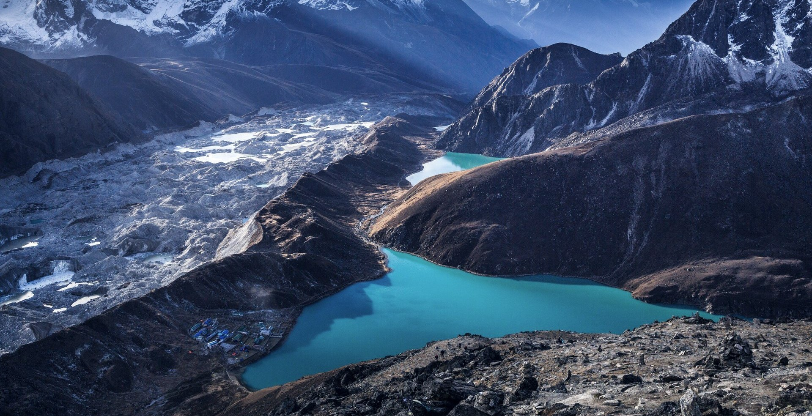
Threats
01
Glaciers melt, and animals must move higher, until there is nowhere left to go.
02
Snow leopards are hunted illegally for their fur and bones.
03
Herders kill predators that attack their animals. Condors eat poison and lead.
04
Mines, roads and too many farm animals destroy their habitat.
a melting glacier in Nepal
▲ 7,000 M
LIFE AT THE TOP · 08
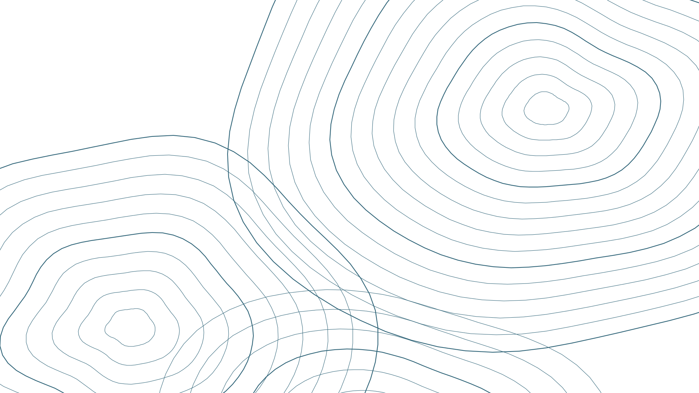
Protection
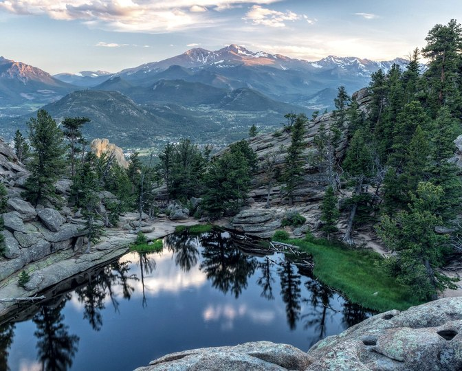
a national park, USA
National parks keep whole habitats safe.
Covered pens keep farm animals safe at night.
Rangers and strong laws stop illegal hunting.
No poisoned bait or lead, so condors eat safely.
Zoos raise condor chicks and set them free.
Save energy, walk or cycle, and waste less.
▲ 8,000 M
LIFE AT THE TOP · 09
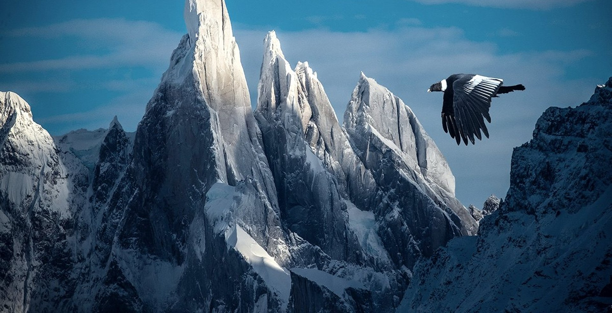
▲ Summit · 8,849 m
172 km
A condor flew 172 km in five hours without flapping once.
0 roars
Snow leopards can’t roar. They make a soft “chuff”.
≈ 90°
Ibex climb almost vertical dam walls to lick salt.
85%
of bird, mammal and amphibian species live in mountains.
▲ SUMMIT · 8,849 M
LIFE AT THE TOP · 10
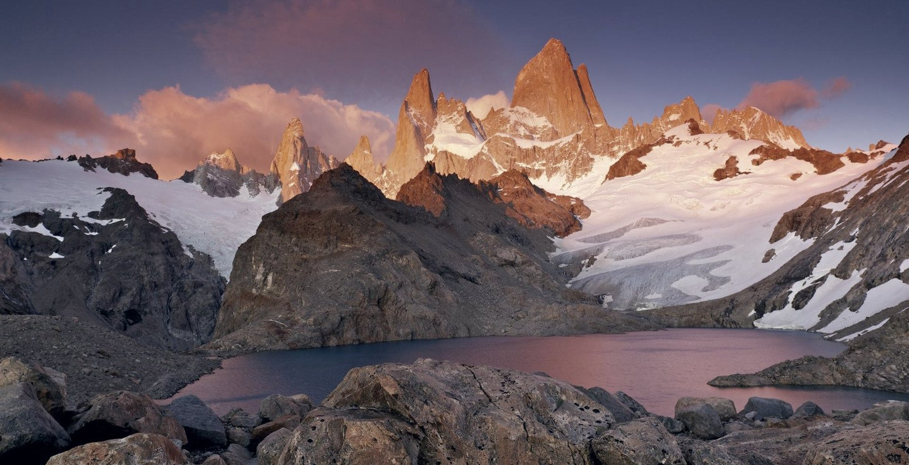
[Student 1]
[Student 2]
[Student 3]
[Student 4]
[Student 5]
Any questions?
▼ BACK AT BASE CAMP
LIFE AT THE TOP · 11